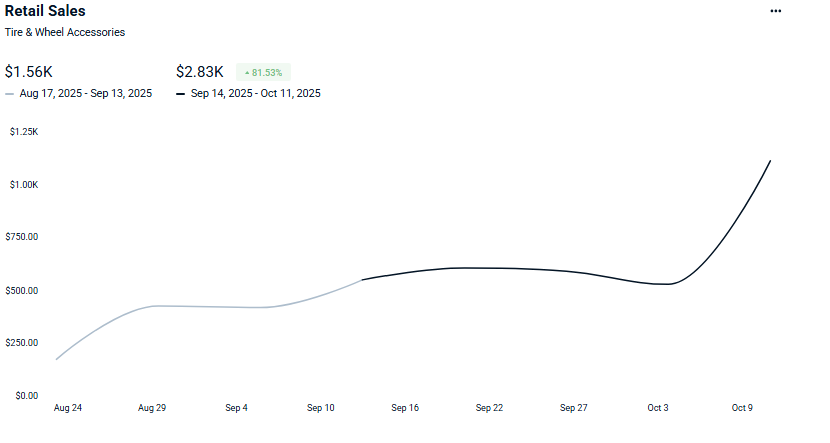

Integrated audit
I reviewed campaigns, terms, products and content as parts of one funnel rather than independent tasks.
Amazon Growth & PPC
A coordinated intervention across campaigns, targeting and content to improve traffic quality and the listing's ability to convert it.
01
An Amazon account where campaigns and content were being optimized separately. The analysis compares consecutive 28-day windows for sales and conversion, plus an aggregate Amazon Ads view from August through October 2025.
Observational before/after comparison; this was not a controlled experiment and does not establish isolated causality.
02
There were signs of opportunity but no shared view across media structure, search intent, listing quality and commercial outcomes. Changing bids without reviewing content—or redesigning content without understanding traffic—could move the problem instead of solving it.
I connected retail sales, conversion and media performance. The priority was to determine whether the constraint was relevant traffic, conversion, or the coordination between both.
03
I audited campaign and listing architecture, reorganized targeting, and coordinated content and media changes. Daily operations and commercial conditions remained with the account team.
04
I reviewed campaigns, terms, products and content as parts of one funnel rather than independent tasks.
I reorganized coverage to separate discovery, performance and defense while reducing overlap.
I aligned listing messages and hierarchy with the questions carried by relevant traffic.
I defined comparisons with explicit dates to avoid mixing incompatible periods and percentages.
EVIDENCE



05
The simultaneous movement in sales and conversion is consistent with an improved system. Because there was no controlled experiment, the case is presented as observational evidence—not proof of isolated causality.
Source: Seller Central y Amazon Ads — Caso1_Sales.png, Caso1_conversions.png y Caso1_plot.jpeg
06
On Amazon, media does not end at the click: its efficiency depends on the search-term promise continuing through gallery, copy, evidence and offer. The real unit of optimization is the complete journey.
Next step
I can connect campaigns, content and economics to locate the constraint and prioritize the next move.